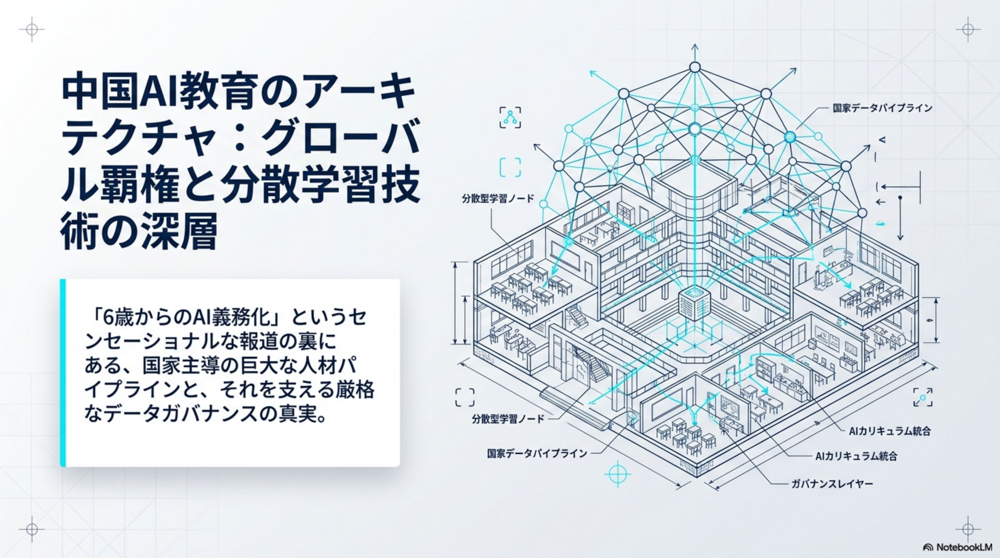
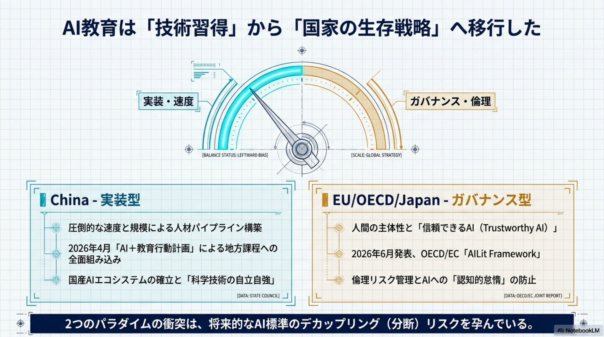
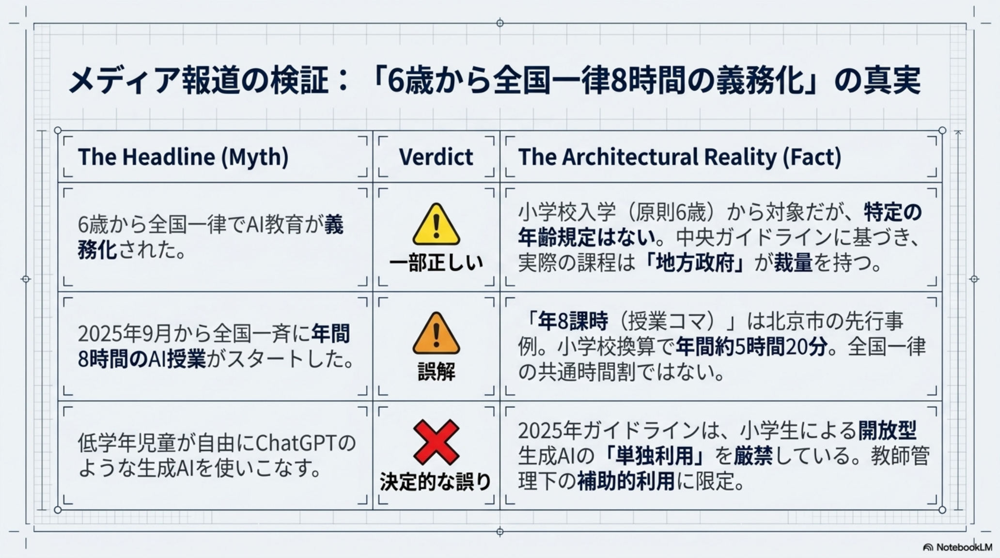
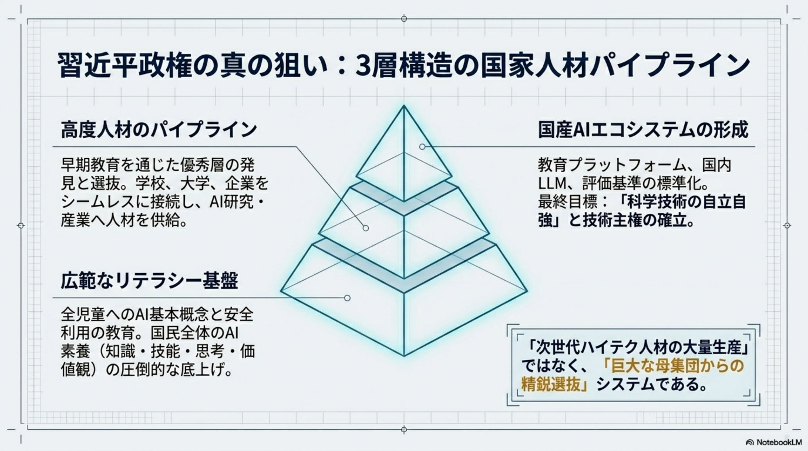
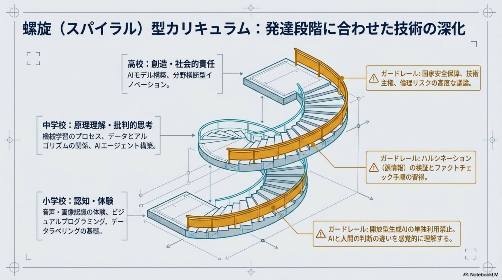
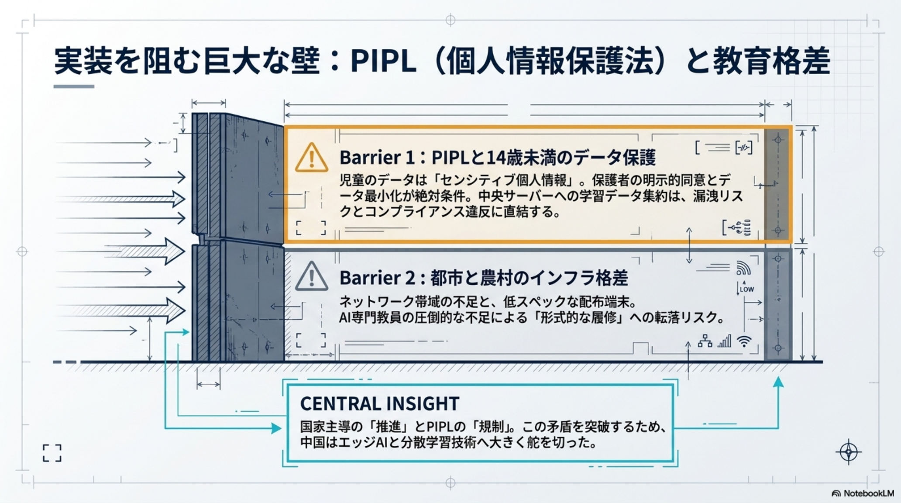
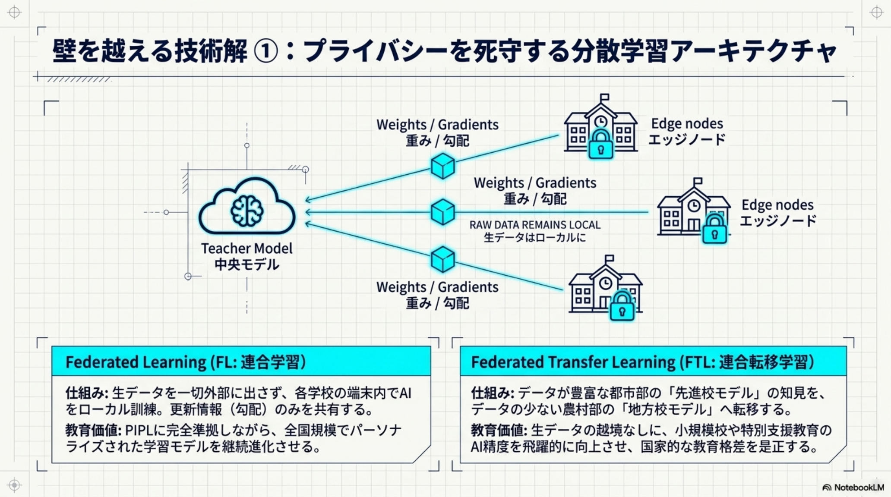
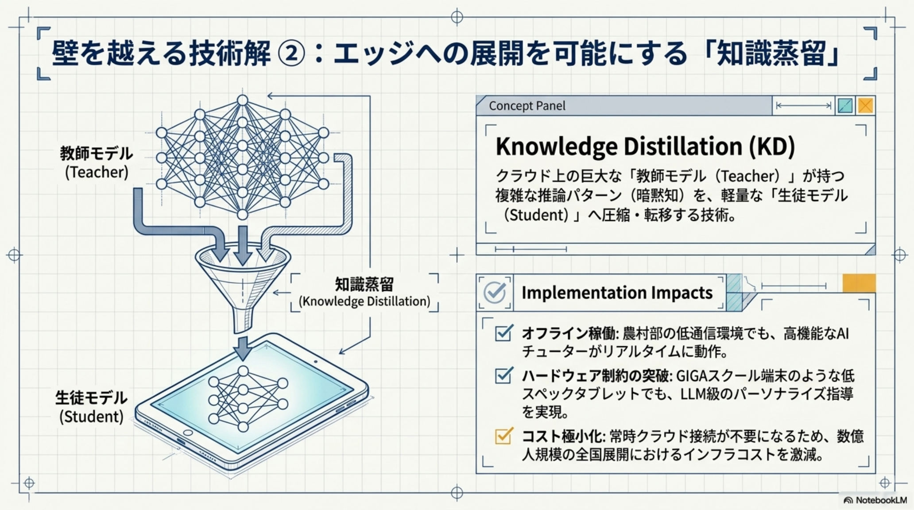
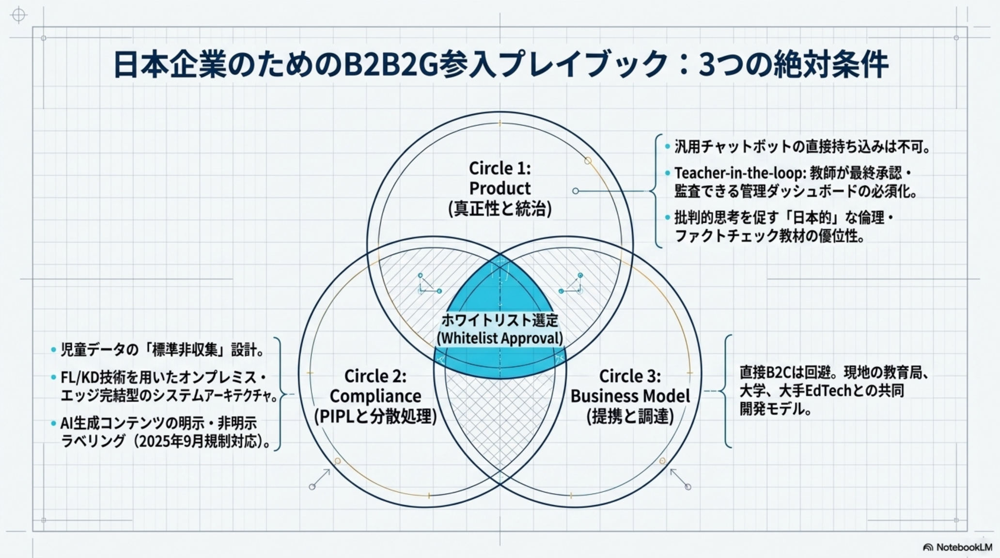

AIを、義務教育に。
国家規模の人材パイプライン。
2026年4月、中国の教育部を含む五省庁が「AI＋教育行動計画」を発表した。AI教育を義務教育課程へ全面統合する全国実装フェーズへ。本質は単なるIT教育ではなく、①全児童リテラシー ②高度人材の早期選抜 ③国産AIエコシステム形成という三層の国家戦略である。

構想から、
全国実装へ。
2026年6月時点で、中国のAI教育政策は「一部のモデル校による実験」から「全国の地方カリキュラムへの全面統合」へ移行した。鍵は「中央がガイドラインを示し、地方が時数・内容を定める」という分権的実装モデルである。
184校を実証基地に選定
全国184校・地域を「中小学校人工智能教育基地」とし、実証基盤を整備。
北京市が必修化を先行
「AI教育推進方案」を公表。秋から市内全校で年間8課時以上を義務化。
全国ガイドライン公表
「AI一般教養教育指南」「生成AI利用指南」（2025年版）を整備。
五省庁「AI＋教育行動計画」
2030年までの「深層統合」を視野に、全国展開を正式に指示。
「6歳から全国一律
8時間義務化」の真実。
流布する見出しと、一次情報に基づく事実にはずれがある。正確な実態は次の通り。誇張も過小評価もせず、制度の構造で捉えることが重要だ。
「一律義務化」ではなく「分権的実装」。 中央がリテラシーの方向を示し、地方が時数と教材を決める——この設計ゆえに、スピードと地域裁量が両立する。報道の数字をそのまま鵜呑みにせず、制度の骨格で読むのが肝要だ。
発達段階に応じて、
螺旋状に深める。
ガイドラインは、AIリテラシーを「知識・技能・思考・価値観」の四領域で定義し、学年とともに同じテーマを繰り返し深める「螺旋（スパイラル）型」を採用する。「怖がらせず、親しませる」設計から、最終的に技術主権の視座へと積み上げる。
小学校
音声認識・画像分類・スマート機器の体験。簡単なビジュアルプログラミングとデータのラベリング。AIと人間の判断の違いを感覚で学ぶ。
中学校
機械学習の基本プロセス、教師あり学習、データとアルゴリズムの関係。ハルシネーションを検証する批判的思考を養い、AIエージェントを構築。
高校
AIモデルの構築・改善、分野横断の課題解決プロジェクト。社会的影響・倫理・安全保障・技術主権の観点でAIを捉え、次世代リーダーの視座を形成。
「操作を教える」のではなく、「視座を育てる」。 螺旋型は、低学年の体験から高校の技術主権まで一本の線でつながる。最終ゴールはAIを国家戦略として捉えられる人材——単なるスキル教育ではない設計思想がここにある。
世界は二極化する。
実装型か、ガバナンス型か。
AI教育のパラダイムは、中国の「実装型」と欧米・日本の「ガバナンス型」に二極化している。スピードと量を取るか、主体性とリスク管理を取るか——この対立軸が、将来の技術競争力を左右する。
短期で巨大な裾野を築く
- →中央集権的トップダウンで一気に全国展開
- →人材パイプラインの量的優位を狙う
- →国産AIエコシステムの母集団を形成
慎重に、人間中心で
- →2026.6 OECD/EU が「AIリテラシー枠組み」公表
- →プライバシー・倫理リスク管理を最優先
- →ノルウェー等は低年齢児の利用を原則禁止
韓国は「両取り」を狙う。 「AIデジタル教科書（AIDT）」の導入など、中国並みのスピード感と西側の倫理重視を融合させた独自モデルを追求している。二極の間に、第三の道がありうる。
速度と統治は、トレードオフではない。 量的優位は将来のイノベーションの裾野になりうるが、質の担保なしには「形式的な操作説明」に終わる。日本に問われるのは、人間中心のまま、いかに速く実装するかだ。
規制と実装を、
分散学習で両立する。
厳格な個人情報保護法（PIPL）とデータセキュリティ法を遵守しつつ広範な実装を可能にするため、3つの分散学習技術が戦略的に活用されている。これが「広く・速く・合法に」を成立させる技術的勝ち筋だ。
連合学習（FL）
データを中央に集約せず、各校の端末内で学習。プライバシーを保護しながら、全国規模のモデル改善を可能にする。
連合転移学習（FTL）
都市部の先進校で得た高品質モデルを地方・農村へ移転。データの少ない地域の教育格差を、技術的に是正する。
知識蒸留（KD）
大規模な教師モデルを軽量な生徒モデルへ圧縮。農村部の低スペック端末やオフライン環境でも動くAIチューターを実現。
「PIPL 遵守」と「全国実装」は、技術で両立できる。 FL でデータを動かさず、FTL で格差を埋め、KD でエッジに届ける——この三段構えが、規制の壁を越えて14億人規模の教育インフラを現実にしている。
日本企業の
事業機会と参入要件。
中国のAI教育市場は巨大だが、参入には高度な現地適合と規制遵守が不可欠だ。「生成AIの単独利用禁止」「14歳未満のセンシティブ情報保護」という制約が、逆に有望なプロダクト領域を生んでいる。
有望な領域。
低学年向け体験型教材 — 生成AIの単独利用禁止を背景に、ロボット教材や物理的な体験ツールの需要が増大する。
教員支援システム — 深刻な教員不足を補う、授業設計・自動採点等の「デジタル教師」ツール。
包摂的教育支援 — 障害児向けの音声・手話・触覚フィードバックを活用した AI アシスタンス。
- 01Teacher-in-the-loop — 教師が最終判断を下す仕組みを構築する。
- 02コンテンツ・ラベリング — 2025年9月施行規則に従い、AI生成物に明示・非明示のメタデータを付与。
- 03データの国内処理 — 14歳未満のセンシティブ情報を保護し、中国国内サーバーで完結する設計。
最大の課題は「実装の質」の担保だ。 年間数コマの授業が形式的な操作説明に終わるリスク、児童データの不透明なプロファイリング、価値観の統制——懸念は根強い。参入する側も、これらに無自覚ではいられない。
中国はAI教育を、China AI Education Architecture — 2026·06·19
「科目」ではなく
国家のインフラと定義した。
同日の、AI ヘッドライン。
教育と並んで、6月19日は医療AIの実証が一気に進んだ一日でもあった。診断支援から安全性研究まで、主要トピックを俯瞰する。
AIが希少疾患18件を診断
推論モデルが、未解決だった希少遺伝性疾患の症例を新たに18件診断。難病の早期発見に道。
openai.com / rare-diseasesGPT-5.5 Instant 健康強化
ChatGPT の健康・ウェルネス回答を改善。医師の評価を取り入れ推論力と明確化を強化。
openai.com / healthAMIE / MIRA 医師超え
AI医療ツール AMIE と MIRA が、診断・治療判断で医師と同等以上の性能を実証。臨床価値に近づく。
gigazine.net / mira-amieNTT「tsuzumi 2」分析
LLM 登場から5年で、AIコーディングが競技プログラミングレベルへ。学習データとアルゴリズムが牽引。
itmedia.co.jpMosaicLeaks
研究エージェントがAPIキー・個人情報を漏洩しうるリスクが判明。LLM運用のセキュリティ対策を再喚起。
huggingface.co / mosaicleaksJDK 28 / Project Valhalla
10年越しの Project Valhalla が JDK 28 で正式リリース。メモリ効率とデータ構造を大幅改善。
jvm-weekly.com「教育」と「医療」が、同じ問いを共有した一日。 中国が次世代の人材を育て、OpenAI / Google が臨床の現場でAIを検証する——AIを社会のどこに、どこまで委ねるかが、教育と医療の両面で同時に問われている。
中国AI教育の全貌、原典より。
本スライドの元になった分析資料（全12ページ）の主要図版。政策・カリキュラム・グローバル比較・分散学習・参入要件の論点を、原典のビジュアルで俯瞰する。









出典と関連リファレンス。
本スライドは中国のAI教育政策に関する公開情報と分析資料に基づく解説。政策の時数・施行規則・各国フレームワークは各一次ソースでの裏取りを推奨する。